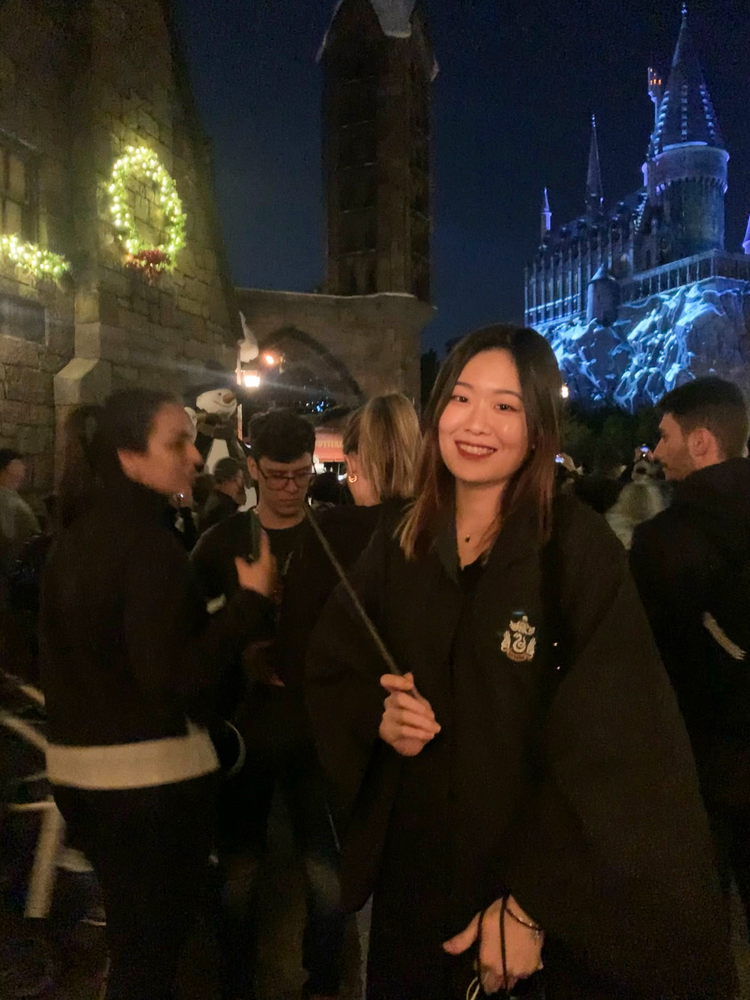

About Me

Hi, I am Jessie. Just in case you are wondering, it's not an abbreviation of Jessica 😎
Nice To Meet You!
I am currently a second-year master's student at Brandeis University studying Business Analytics. I will graduate on Feburary 2023 and I am excited to pursue my career in the field of data analytics.
Before joining Brandeis University, I earned my bachelor's degree in logistics management at BTBU in Beijing, China and received the Outstanding Graduate Award.
During my year in college, I developed strong interest in statistics computer technology. Ever since then, I was craved to working on something that can combine my affinity with what I have learned.
In my senior year, I joined an exchanging program went to Ireland, where I studied more advanced statistical models and analytical techniques related to data analysis.
 I love solving problems and enjoy the whole exploring process, especially when I can bring creative ideas into my work. Trying something new can be risky, but it can get so much fun in the meantime. And it gives me the chance to learn what's beyond the predefined scope.
With all the tools and techniques I have learned so far, I feel ready to take on more challenging tasks and use what I know to dive into actual problems and contribute to the workplace.
One of my teammates once told me that she likes how I think and like how I share my ideas and additional resources with the whole team. She felt like she has learned a lot from these discussions. Being able to motivate other people really makes me feel so rewarded.
I love solving problems and enjoy the whole exploring process, especially when I can bring creative ideas into my work. Trying something new can be risky, but it can get so much fun in the meantime. And it gives me the chance to learn what's beyond the predefined scope.
With all the tools and techniques I have learned so far, I feel ready to take on more challenging tasks and use what I know to dive into actual problems and contribute to the workplace.
One of my teammates once told me that she likes how I think and like how I share my ideas and additional resources with the whole team. She felt like she has learned a lot from these discussions. Being able to motivate other people really makes me feel so rewarded.
Fun Fact:
I used to be a press photographer in college, and still keep the habit of using photos and videos to record my life
Want to try skydiving!